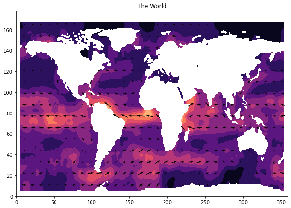

Lab Week 9¶
EOSC 211¶
This is just a sketch that recreates the results from the old matlab version of this lab
Learning Objectives:¶
Debug code
(other possibilities):
use dictionary keys to reference complex datasets instead of RC indexing
work with purely functional code?
Intro¶
link to 9 debugging commandments
Are we going to use a formal debugger?
or…
Pivot learning goals and use this week to talk about dictionaries?
Current version does roughly what the old matlab code did, using pure functions
import numpy as np
from matplotlib import pyplot as plt
# get the datafile
the_file = np.genfromtxt("mgsva_MJJ.csv",delimiter=",")
# extract variables from the csv
# (explicit + flat is better than implicit + nested)
lats = the_file[:,1]
lons = the_file[:,2]
u_vel = the_file[:,3]
v_vel = the_file[:,4]
#u_dev = the_file[:,5]
#v_dev = the_file[:,6]
# or
# (namespaces are a honking great idea)
var_dict = {"lats":the_file[:,1],
"lons":the_file[:,2],
"u_vel":the_file[:,3],
"v_vel":the_file[:,4]}
#"u_dev":the_file[:,5],
#"v_dev":the_file[:,6]}
def move_to_grid(lats, lons, u_vel, v_vel):
"""
function to create 2D arrays out of FORTRAN formatted csv data
in:
csv file with columns 15000., lon, lat, u_vel, v_vel, u_dev, v_dev
(dev is the standard deviation of each velocity measurement, 15000.
is an artifact from FORTRAN formatting)
out:
1D arrays: lat_0, lon_0
2D arrays: u, v
"""
# set up grids
# initializing with NaNs also automatically deals with points where there is
# no data (eg. on land) because those locations will simply contain NaNs
lon_0 = np.arange(-179,180)
lat_0 = np.arange(-89, 89)
u = np.full([179, 360], np.nan)
v = np.full([179, 360], np.nan)
# Loop through all points in .csv file.
#
# For each, calculate the row/col indices
# from the lat/longs. Lats get converted
# into row indices 'i', and longs into column
# indices 'j'. Since we have a 1 degree spacing
# we just have to add the right offset
# to make this work - for example, for latitudes
# latitude of -89 goes to row 0,
# latitude of -88 goes to row 1, etc.
#
# Then write the
# corresponding U/V data for that lat/long
# into the right place (i.e. index (i,j) )
# in the U/V matrices
for k in range(len(lats)):
i = int(lons[k]) + 78 # row index
j = int(lats[k]) + 179 # column index
u[i,j] = u_vel[k]
v[i,j] = v_vel[k]
return lon_0, lat_0, u, v
def mean2d(in_map, winlen):
"""
Takes a 2D running mean of an input np array
in: winlen -- window length
in_map -- numpy array on which to perform the running mean.
assumes in_map is a world map, and wraps longitude[-1] around to [0]
out: out_map -- the filtered map
"""
# put the actual filtering operation in a subfunction
def do_mean_dep(in_map, winlen):
# initialize the output array and relevant variables
out_map = np.empty_like(in_map)
nrows, ncols = in_map.shape
wn = int((winlen - 1) // 2)
# loop through each element in the map and perform the average
# no attempts made yet to address edge effects
for i in range(nrows):
for j in range(ncols):
iv = i + np.arange(-wn, wn) # indeces for rows to use
jv = j + np.arange(-wn, wn) # inceces for cols
# don't include points above or below the map
iv[iv < 0] = np.nan
iv[iv > nrows] = np.nan
# wrap around points off the right edge of the map
jv[jv > ncols] = jv[jv > ncols] - ncols
# don't filter the land elements
if np.isnan(in_map[iv,jv]):
out_map[iv,jv] = np.nan
else:
the_window = out_map[iv - wn:iv + wn + 1,jv - wn:jv + wn + 1]
# nanmean is a function that returns the mean
# while ignoring nan values
out_map[iv,jv] = np.nanmean(the_window)
return out_map
def do_mean(in_map, winlen):
# initialize output array and internal variables
out_map = np.empty_like(in_map)
out_map[:] = np.nan
nrows, ncols = in_map.shape
wn = int((winlen - 1) // 2)
# loop through every point (i, j) in the grid:
# (ignore edges for now)
for i in range(wn, nrows - wn):
for j in range(wn, ncols - wn):
# don't filter points containing nan (ie land, edge of map)
if not np.isfinite(in_map[i,j]):
out_map[i,j] = np.nan
else:
# create the window
imin = i - wn
imax = i + wn + 1
jmin = j - wn
jmax = j + wn + 1
the_window = in_map[imin:imax, jmin:jmax]
# use nanmean to take the mean, ignoring nan values
out_map[i,j] = np.nanmean(the_window)
return out_map
# check for odd winlen
winlen = int(winlen)
if winlen % 2 == 0:
print("input arg 'winlen' must be even")
return None
# winlen of 1 means "do nothing"
elif winlen == 1:
return in_map
# do the calculation and return result
else:
return do_mean(in_map, winlen)
def mask_nth(in_map, n):
"""
returns a 2d array with all values np.nan except points on a grid of n x n spacing
in:
in_map: 2d numpy array
n: desired spacing of points
out:
masked_map: 2d numpy array with mask applied
"""
masked_map = np.empty_like(in_map)
masked_map[:] = np.nan
masked_map[::n,::n] = in_map[::n,::n]
return masked_map
Equation for velocity magnitude:
\[
m = \sqrt{u^2 + v^2}
\]
#lons, lats, u, v = move_to_grid(lats, lons, u_vel, v_vel) # the standard way
lons, lats, u, v = move_to_grid(**var_dict) # the honking great way
# calculate magnitude of current velocity
m = (u ** 2 + v ** 2) ** 0.5
# filter the velocity fields
filter_width = 11
u_filt = mean2d(u, filter_width)
v_filt = mean2d(v, filter_width)
m_filt = mean2d(m, filter_width)
# apply mask to make nicely spaced arrows
u_masked = mask_nth(u_filt, filter_width)
v_masked = mask_nth(v_filt, filter_width)
# do the plot
fig, ax = plt.subplots(figsize=(10,7))
ax.contourf(m_filt,cmap="magma")
ax.quiver(u_masked, v_masked, pivot="middle", scale=15)
ax.set_title("The World");

# splatting and doublesplatting tutorial snippet
my_list = [3,4]
my_dict = {"a":5, "b":6}
def print_vars(a, b):
print(a)
print(b)
return None
print("normal function call:")
print_vars(1,2)
print("splat from a list (or tuple)")
print_vars(*my_list)
print("double splat from a dictionary")
print_vars(**my_dict)
normal function call:
1
2
splat from a list (or tuple)
3
4
double splat from a dictionary
5
6